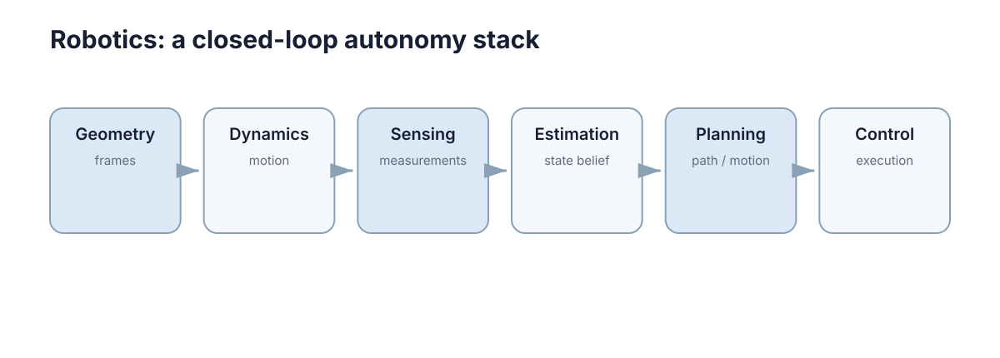

Robotics
机器人部分把模型、传感、状态估计、SLAM、规划和控制串成完整闭环，目标是理解一台自主机器人怎样从传感器数据走到动作执行。一句话概括：机器人学不是五个独立学科的拼盘，而是一条“观测 → 估计 → 决策 → 动作 → 再观测”的反馈链，链上任一环的误差都会以可预测的方式放大到末端行为。

本节要解决的问题
读这一节之前，常见的困惑是“公式都懂，但不知道装在哪”。具体表现为三类问题：
- 概念断层：知道雅可比矩阵的定义，但不知道它在逆运动学、力控和速度控制里各扮演什么角色；
- 接口断层：能写出卡尔曼滤波的更新方程，但不知道它和里程计、IMU、激光雷达怎么接，协方差怎么用；
- 调参断层：只要机器人走不好就“换个算法试试”，缺乏从现象反推层级的能力。
本节按一条主线的顺序组织：几何与动力学 → 传感与估计 → 建图与定位 → 规划 → 导航与控制。 每一章都回答同一个结构的问题：这层解决什么问题、输入输出是什么、关键公式的变量含义、失效模式是什么、和相邻层怎么接。
判断“真的学懂了”的标准不是能复述公式，而是能回答下面这类带数量级的问题：
- 里程计漂移速率是每米 1% 还是每米 5%，跑 100 m 后偏差是 1 m 还是 5 m？
- 定位协方差 \(\sigma_x\) 到了 0.3 m，走廊还能不能走？
- 规划器报无解，是地图膨胀太大还是真的被堵？
- 高速下蛇形振荡，该改前视距离还是该改 \(k_p\)？
这些问题都有一个共同结构：先估数量级，再决定改哪一层。 例如里程计漂移每米 2%，直行 100 m 后位置偏差约 \(0.02\times100=2\ \text{m}\)；若走廊只剩 0.3 m 余量，那这 2 m 就不是“误差偏大”，而是“系统不可用”，处理方式必须回到状态估计层（加绝对定位或回环修正），而不是继续调控制器。
因此读这一节时建议随身带三个量：误差量级、可行余量、控制周期。三者一旦不满足余量大于误差，后面的算法优化都是徒劳。
六章的推进逻辑
| 顺序 | 章节 | 输入 | 输出 | 核心问题 |
|---|---|---|---|---|
| 1 | 机器人模型、运动学与动力学 | 关节/轮速指令 | 位姿与速度的时间演化 | 指令如何变成运动 |
| 2 | 机器人传感与状态估计 | 传感器原始读数 | 位姿 \(\hat x\) 与协方差 \(\Sigma\) | 噪声数据如何变成状态 |
| 3 | 地图构建与 SLAM | 位姿估计 + 观测 | 地图与修正后的轨迹 | 地图与位姿如何互相成就 |
| 4 | 路径规划与运动规划 | 地图 + 目标 | 可行且代价合适的路径/轨迹 | 怎么去 |
| 5 | 机器人导航与控制 | 路径 + 实时位姿 | 可执行的速度/转向指令 | 怎么稳稳地跟着去 |
推进逻辑是依赖关系而非并列关系：第 2 章的状态估计精度直接决定第 3 章建图质量，第 3 章的地图质量决定第 4 章能否找到路径，第 1 章的模型准确度决定第 5 章控制器能否收敛。反过来说，上游的误差无法在下游被算法修复——定位漂移 2 m，再好的规划也无法让机器人在真实世界停在正确位置。
概念地图
下图给出机器人栈的闭环结构，逐节点解释如下。
Geometry / frames（几何与坐标系） 是整个栈的语言。所有位姿都写成某个坐标系下的变换，二维情形是
其中 \(R(\theta)\) 是 \(2\times2\) 旋转矩阵，\(t\in\mathbb{R}^2\)。链条 map → odom → base_link → sensor 上任何一环错了，后面所有计算都在错误的前提下进行。
Dynamics / motion（动力学与运动） 回答“给了控制输入，状态怎么演化”：\(\dot x=f(x,u)\)。它把抽象的路径变成机器真正能执行的量，并给出速度、加速度、转弯半径等硬边界。
Sensing / measurements（传感与测量） 把物理世界变成带噪声的数字：\(z=h(x)+v\)，\(v\sim\mathcal{N}(0,R)\)。噪声协方差 \(R\) 不是贬义，它是算法判断“该信多少”的依据。
Estimation / state belief（估计与状态信念） 把多源观测融合成一个带不确定度的状态：\(\hat x,\ \Sigma\)。它连接上下游——往上给规划器可靠位姿，往下把地图信息反馈给定位。递推形式的核心是贝叶斯更新，见 条件概率与贝叶斯。
Planning / path & motion（规划） 在约束下搜索代价最小的运动方案：\(\min\ \text{cost}(\sigma)\) s.t. 无碰撞且满足动力学。它处理的是“未来”，因此必须显式面对地图不完备和障碍会动这两件事。
Control / execution（控制与执行） 把路径变成闭环指令，让横向误差 \(e\) 收敛。它处理的是“当下的偏差”，因此对延迟、噪声和饱和最敏感。
把这六个节点串成闭环，核心的递推关系可以写成两步：预测
与更新
其中 \(K_{k+1}\) 是滤波增益，\(z_{k+1}-h(\hat x^{-})\) 是新息（innovation），即“观测与预期之差”。这个式子把整节的内容压缩成一句话：机器人靠“预测—比较—修正”活着，Planning 决定 \(u\)，Control 保证 \(u\) 被真实执行，Sensing/Estimation 提供 \(z\) 与 \(\hat x\)。
各节点之间的关键耦合：
| 上游节点 | 下游节点 | 传递内容 | 上游失准的后果 |
|---|---|---|---|
| Geometry | Dynamics / Sensing | 坐标系与变换 | 一切位置计算都错 |
| Dynamics | Planning | 可行域（速度、曲率上限） | 规划出无法执行的轨迹 |
| Sensing | Estimation | 观测 \(z\) 与噪声 \(R\) | 状态估计发散或过度平滑 |
| Estimation | Planning / Control | \(\hat x\) 与 \(\Sigma\) | 路径起点错、控制目标错 |
| Planning | Control | 全局路径 / 局部轨迹 | 控制无参考或参考不可行 |
| Control | Dynamics | 实际执行的控制 \(u\) | 模型不匹配导致稳态偏差 |
与它章的接口
机器人学大量的“卡住”其实是跨章节的接口问题。下面这张表说明了每个机器人概念在别处被怎么用：
| 机器人概念 | 用在哪章 | 解决什么 |
|---|---|---|
| 雅可比矩阵 \(J(q)\) | 建模与状态空间 | 关节速度映射到末端速度：\(\dot x=J(q)\dot q\)，力映射用 \(J^{\mathsf T}\) |
| 坐标变换与齐次矩阵 | 建模与状态空间 | 统一状态空间表达，保证坐标系一致 |
| 卡尔曼滤波 | 条件概率与贝叶斯 | 递归贝叶斯融合，输出 \(\hat x,\Sigma\) |
| TF 与时间同步 | 分布式时间 | 多传感器时间对齐，避免用过期位姿 |
| 节点通信与消息 | 网络与消息 | 传感器、规划、控制节点之间的数据流 |
| 点云与深度图 | 深度与点云 | 从观测构造障碍表示与局部代价地图 |
| 滚动优化控制（MPC） | 模型预测控制 | 带约束的轨迹跟踪与预测控制 |
| 传感器仿真 | 机器人传感仿真 | 在仿真里复现实机噪声与延迟 |
| 故障容错与降级 | 故障容错 | 传感器失效时的降级与恢复策略 |
实践建议：当机器人在实机上表现异常时，先按上表从上往下排查——坐标系和时间的错误比算法错误常见得多。
仿真与实机的差距
仿真里跑通只是起点。下面这些假设在仿真中通常默认成立，在实机上往往不成立：
| 仿真里成立 | 实机上不成立 | 后果 | 缓解方向 |
|---|---|---|---|
| 传感器无噪声、无延迟 | 有噪声，延迟 10–100 ms | 控制器相位裕度下降 | 仿真加噪声与延迟，见 传感仿真 |
| 轮子与地面无滑移 | 打滑、轮径误差、胎压变化 | 里程计漂移 1%–5%/m | 标定 + 视觉/激光修正 |
| 执行器瞬时响应 | 有加速时间与死区 | 低速时速度指令不生效 | 实机标定速度缩放曲线 |
| 位姿真值直接可得 | 只能靠估计，带协方差 | 路径起点系统性偏移 | 用 \(\Sigma\) 做可信度判断与降级 |
| 地图静态且精确 | 地图过期、动态障碍 | 计划路径被临时阻挡 | 局部避障 + 重规划 |
| 计算无限快 | 有 CPU/功耗约束 | 频率掉下、抖动 | 关键环路固定周期、性能预算 |
| 碰撞代价对称 | 碰撞后果不可逆 | 一次失误即损坏 | 硬安全层与软约束分离 |
其中里程计漂移最容易低估：按每米 2% 的漂移率，直行 100 m 后位置偏差约 2 m，已经超过多数走廊的可行余量。这正是为什么第 2、3 章的状态估计与 SLAM 不是可选项。
缩小差距有可度量的做法：先让仿真复现实测的噪声标准差与端到端延迟，再要求 sim 与 real 在同一段路径上的横向误差均值差在 20% 以内。若仿真完美无噪声而实机噪声大，控制器在仿真里调出的高增益一到实机就会振荡——“仿真里能跑”与“仿真调参有效”是两回事。
调试顺序
无论问题表现得多复杂，调试都按 数据链 → 模型 → 控制器 的顺序进行，不可跳步：
- 数据链：所有传感器频率是否稳定？时间戳是否对齐？TF 链是否完整？——用
ros2 topic hz类的工具看频率，比对时间戳。这一步不通过，后面所有调参都在拟合噪声。 - 模型：发已知速度指令，测量实际位移，标定轮径、轴距、速度缩放。若“给 0.5 m/s 实际走 0.62 m/s”，控制器再准也有系统性偏差。
- 控制器：固定前两层，只调一组参数，用同一初始位姿、同一路径重复 3 次，同时看横向误差的均值与峰值。
现象到层的快速对照：
| 现象 | 优先检查层 | 第一个要测的量 |
|---|---|---|
| 指令发出但机器人不动 | 数据链 | 各节点频率与安全层状态 |
| 走一段后系统性偏移 | 数据链 / 模型 | 里程计与外部真值的偏差 |
| 直线走得歪，随速度变化 | 控制器 | 横向误差 \(e\) 随时间曲线 |
| 同一位置总是“无解” | 地图 / 规划 | 该处可通行宽度与膨胀半径 |
| 避障时贴障碍擦过 | 规划 / 控制 | 最小离障碍距离统计 |
本章导航
推荐阅读顺序有两种，取决于你的起点：
- 按依赖顺序读（推荐）：1 → 2 → 3 → 4 → 5。前两章建立“机器人怎么动、怎么知道自己动”的基础，第 3 章解决长期漂移，后两章才谈怎么去。
- 按问题导向读：若机器人已经能动但走不好，直接读第 5 章的失败模式表，再回溯到对应章节。
5 章的入口如下：
- 机器人模型、运动学与动力学 —— 位姿、坐标系、雅可比、差速与阿克曼模型，指令如何变成运动。
- 机器人传感与状态估计 —— 编码器、IMU、激光与视觉，卡尔曼滤波如何把噪声读数变成 \(\hat x,\Sigma\)。
- 地图构建与 SLAM —— 占据栅格、ICP、位姿图优化与回环，地图与位姿如何互相校正。
- 路径规划与运动规划 —— A*、RRT、PRM 与轨迹优化，从图搜索到动态可行的轨迹。
- 机器人导航与控制 —— 全局/局部分层、Pure Pursuit 与 Stanley、调参顺序与实机失效模式。
下一步：如果只读两章，选 机器人模型、运动学与动力学 和 机器人导航与控制——它们定义了整条闭环的两端。想先补齐数学基础可从 条件概率与贝叶斯 入手；想直接看闭环控制的理论地基，见 反馈与稳定性；关注仿真到实机的落地路径，见 机器人传感仿真。